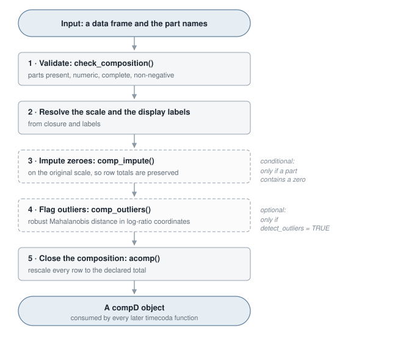
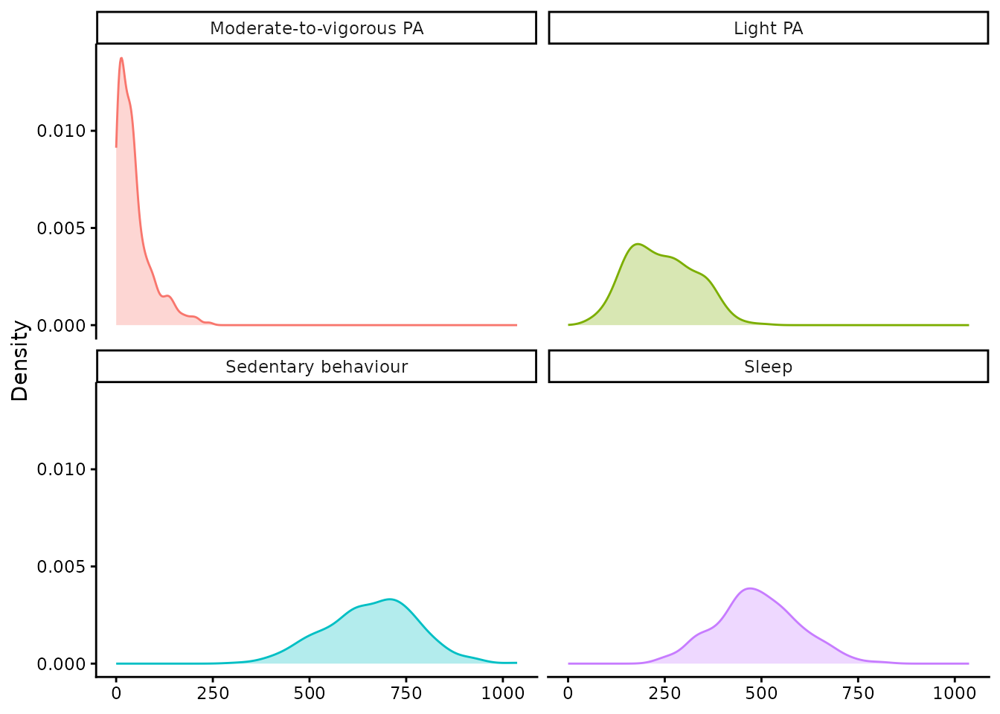
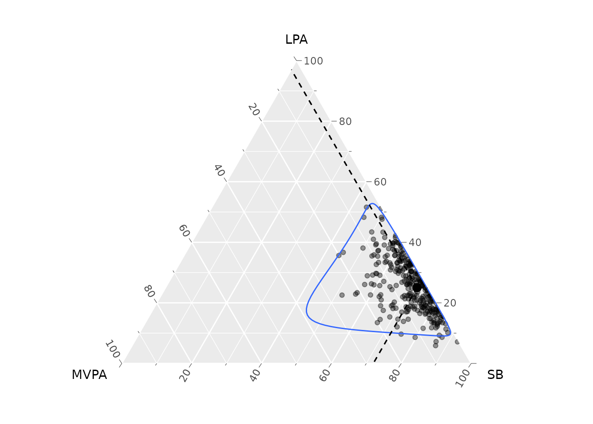
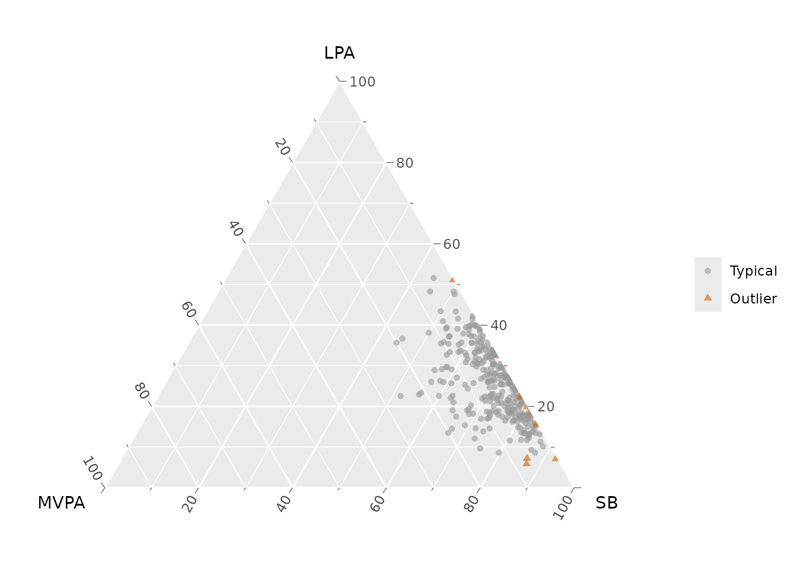

Working with a compositional variable
Source:vignettes/composition-variable.Rmd
composition-variable.RmdCompositional data
Given that the parts of a composition sum to a constant, a minute added to one behaviour is taken from another, and a group that spends more time in one part spends less in at least one other (Dumuid et al., 2020; Pedišić et al., 2017). Separate comparisons of each part therefore test quantities that cannot vary independently, and statistics computed directly on the parts are distorted by the constraint.
Compositional analysis instead works on the log-ratios between parts,
which are unconstrained and carry the relative information in a
composition (Aitchison, 1986; Dumuid et al., 2020). Isometric log-ratio
(ILR) coordinates express a D-part composition as
D - 1 unconstrained real numbers that retain all of its
relative information (Egozcue et al., 2003). Pivot coordinates, a family
of ILR coordinates, contrast the first part with the geometric mean of
all the others in the first coordinate (Filzmoser et al., 2018).
In timecoda, a composition is represented by a
compD object built with declare_composition().
You declare the part names, the reporting scale and the treatment of
zeroes there once, and every later function in the package takes that
object in place of the raw columns.
The examples use the bundled timeuse data, a simulated
sample of 300 participants whose days are divided into four parts,
namely moderate-to-vigorous physical activity (MVPA), light
physical activity (LPA), sedentary behaviour
(SB) and sleep (SPT, the sleep period
time).
Part 1. The declare pipeline
What declare_composition() does
A single call to declare_composition() runs five steps,
two of them conditional, and three of the steps are also exported as
functions you can run on their own.

A complete declaration
To make the results reproducible, set a seed first, because outlier detection draws a random subset.
set.seed(1)
cd <- declare_composition(
data = timeuse,
parts = c("MVPA", "LPA", "SB", "SPT"),
closure = 1440,
labels = c(
MVPA = "Moderate-to-vigorous PA",
LPA = "Light PA",
SB = "Sedentary behaviour",
SPT = "Sleep"
),
impute_method = "lrEM",
detect_outliers = TRUE,
outlier_args = list(quantile = 0.975)
)Reading the summary
summary(object = cd)
#> <compD> compositional variable summary
#> Parts: Moderate-to-vigorous PA, Light PA, Sedentary behaviour, Sleep
#> Closure: 1440
#> Observations: 300
#>
#> Row totals (before closure): mean 1440.0 (SD 0.0), range 1440.0-1440.0
#> No zeroes detected.
#> Outliers flagged: 14 of 300 (4.7%) beyond the robust Mahalanobis cutoff 3.06 (chi-squared 0.975)
#>
#> Descriptive statistics
#> geom_mean: imputed, closed composition; other columns: original data
#> # A tibble: 4 × 10
#> part label geom_mean mean sd median p25 p75 min max
#> <chr> <chr> <dbl> <dbl> <dbl> <dbl> <dbl> <dbl> <dbl> <dbl>
#> 1 MVPA Moderate-to-vigoro… 28.1 45.9 44.7 35.0 12.7 61.8 0.1 240
#> 2 LPA Light PA 235. 243. 86.9 232. 173. 308. 51.8 504.
#> 3 SB Sedentary behaviour 677. 661. 118. 669. 586. 743. 316. 1037.
#> 4 SPT Sleep 499. 491. 106. 489. 426. 559. 240. 815.
#>
#> Variation matrix
#> # A tibble: 4 × 6
#> part label MVPA LPA SB SPT
#> <chr> <chr> <dbl> <dbl> <dbl> <dbl>
#> 1 MVPA Moderate-to-vigorous PA 0 1.67 1.55 1.44
#> 2 LPA Light PA 1.67 0 0.247 0.260
#> 3 SB Sedentary behaviour 1.55 0.247 0 0.140
#> 4 SPT Sleep 1.44 0.260 0.140 0The row totals in the header are taken before closure, and totals that differ appreciably from the declared closure show that the data were rescaled by that amount.
With outlier flagging, the summary also reports the number of
observations flagged and the cutoff they exceeded, the square root of
the 97.5th percentile of a chi-squared distribution on
D - 1 degrees of freedom. The probability printed beside
the cutoff is the quantile you declared.
The geometric mean is computed from the imputed, closed composition, whereas the other columns describe each part as recorded, with zeroes included and before closure.
The variation matrix holds var(log(x_i / x_j)) for every
pair of parts and is the compositional counterpart of a correlation
matrix (Dumuid et al., 2020; Pedišić et al., 2017). A small entry marks
two parts that vary proportionally to one another, and a large entry two
parts that vary largely independently. Sedentary behaviour and sleep
have the smallest entry, so their ratio is the most stable across the
sample.
Part 2. The steps in detail
Validation
check_composition() is run before anything else, and the
call stops with a message naming the part at fault when a part is absent
from the data, non-numeric, incomplete or negative. Zeroes are allowed
here because the next step imputes them.
To screen data before you declare a composition, call the exported
function on its own. To check that every row sums to the expected value
within a tolerance, set total. This check detects
accelerometer or diary records that do not account for a full day.
The reporting scale
To fix the scale on which the composition is reported, set
closure. It accepts a positive number or one of two
strings, and its value is stored on the object and shared by every
downstream summary, plot and prediction.
| Value | Result |
|---|---|
1440 |
minutes per day |
1 (default) |
proportions |
100 or "percent"
|
percentages |
"mean" |
the average of the observed row totals |
Use "mean" for records that vary in duration and have no
nominal total, because it reports the composition on the scale observed
in the data. For records whose totals vary between people, see the
section on the total as a covariate in
vignette("advanced-models", package = "timecoda").
Zero imputation
A zero in a compositional part usually reflects a value below the
resolution of the measurement, and comp_impute() replaces
zeroes with small positive values using the imputation methods of the
zCompositions package (Palarea-Albaladejo &
Martín-Fernández, 2015).
timeuse contains no zeroes, so five values of
MVPA are set to zero in the example.
z <- timeuse
z$MVPA[1:5] <- 0
set.seed(1)
cd_z <- declare_composition(data = z, parts = c("MVPA", "LPA", "SB", "SPT"),
closure = 1440, impute_method = "multRepl")
summary(object = cd_z, var_matrix = FALSE)
#> <compD> compositional variable summary
#> Parts: MVPA, LPA, SB, SPT
#> Closure: 1440
#> Observations: 300
#>
#> Row totals (before closure): mean 1438.9 (SD 12.7), range 1245.2-1440.0
#> Zeroes detected: MVPA (5 of 300, 1.7%)
#> Zeroes imputed via multRepl
#>
#> Descriptive statistics
#> geom_mean: imputed, closed composition; other columns: original data
#> # A tibble: 4 × 10
#> part label geom_mean mean sd median p25 p75 min max
#> <chr> <chr> <dbl> <dbl> <dbl> <dbl> <dbl> <dbl> <dbl> <dbl>
#> 1 MVPA MVPA 25.4 44.8 44.0 33.8 12.0 61.1 0 240
#> 2 LPA LPA 236. 243. 86.9 232. 173. 308. 51.8 504.
#> 3 SB SB 678. 661. 118. 669. 586. 743. 316. 1037.
#> 4 SPT SPT 500. 491. 106. 489. 426. 559. 240. 815.By default, the detection limit of a part is the smallest positive
value observed for it, and each imputed value lies below that limit. To
use a limit defined by the measuring instrument, supply it directly
through dl.
To choose the imputation method, set impute_method to
one of the five methods below.
| Method | Approach |
|---|---|
"lrEM" (default) |
log-ratio expectation-maximization |
"multRepl" |
multiplicative replacement |
"lrDA" |
log-ratio data augmentation |
"multLN" |
multiplicative lognormal |
"lrSVD" |
singular value decomposition |
"lrEM" is the default because it estimates replacement
values from the covariance structure of the remaining parts, while
"multRepl" is the simplest method and is adequate when
zeroes are few. To pass controls specific to a method, use
....
Imputation is run on the original scale, before closure, so each row’s absolute total is preserved for the models that use it.
Outlier flagging
A compositional outlier is an observation with atypical ratios between parts, and such observations cannot be seen when the parts are examined one at a time. A participant reporting fourteen hours of sleep and no moderate-to-vigorous activity, for example, may fall within the observed range of every individual part and still lie far from the centre of the simplex. Every model in this package is fitted on log-ratio coordinates, so an observation of this kind exerts leverage on every estimate derived from the composition.
comp_outliers() implements the method of Filzmoser and
Hron (2008), in which the robust Mahalanobis distance of each
observation from the centre is computed in pivot log-ratio coordinates
with the minimum covariance determinant estimator and then compared
against a chi-squared cutoff.
The distance is invariant to the closure of the composition and to the choice of log-ratio pivot, so the flags are the same whatever scale the parts are reported on and whatever order they are listed in.
If you set quantile above the default
0.975, the cutoff widens and fewer observations are
flagged.
set.seed(1)
cd_strict <- declare_composition(data = timeuse,
parts = c("MVPA", "LPA", "SB", "SPT"),
closure = 1440, detect_outliers = TRUE,
outlier_args = list(quantile = 0.99))
summary(object = cd_strict, desc = FALSE, var_matrix = FALSE)
#> <compD> compositional variable summary
#> Parts: MVPA, LPA, SB, SPT
#> Closure: 1440
#> Observations: 300
#>
#> Row totals (before closure): mean 1440.0 (SD 0.0), range 1440.0-1440.0
#> No zeroes detected.
#> Outliers flagged: 8 of 300 (2.7%) beyond the robust Mahalanobis cutoff 3.37 (chi-squared 0.990)Flagged observations are never removed, and every element of the object keeps one entry per input observation.
Part 3. Describing a declared composition
Publication tables
The descriptive tables returned by summary() have full
numeric precision for further computation. To round them for
publication, use pub_ready(), which builds the table with
the gt package, a suggested package that no other function
requires.
| Descriptive summary | |||
| Spread of the original data and the compositional centre per part | |||
| Part | Mean ± SD (original data) | Geometric mean (closed to 1440) | % of total |
|---|---|---|---|
| Moderate-to-vigorous PA | 45.9 ± 44.7 | 28.1 | 2.0 |
| Light PA | 242.6 ± 86.9 | 235.5 | 16.4 |
| Sedentary behaviour | 660.7 ± 117.6 | 677.2 | 47.0 |
| Sleep | 490.8 ± 106.2 | 499.2 | 34.7 |
Figures
To plot the composition, use plot(), which draws a set
of panels describing the composition and returns them invisibly, so you
can modify them later. Each panel has its own argument, so you can
request any subset of them.
The first group shows the distribution of each part and, as a heatmap, the variation matrix of Part 1, in which darker cells mark pairs of parts that vary proportionally.
plot(x = cd, ternary = FALSE, outliers = FALSE)


Once outliers have been flagged, a further panel shows each observation’s distance against the cutoff, with the flagged observations lying above the dashed line.
plot(x = cd, histogram = FALSE, boxplot = FALSE, ternary = FALSE,
variation = FALSE)
Ternary plots
A composition of D parts yields
choose(D, 3) panels, so three declared parts give one panel
of each kind.
set.seed(1)
cd3 <- declare_composition(data = timeuse, parts = c("MVPA", "LPA", "SB"),
closure = 1440, detect_outliers = TRUE)
plot(x = cd3, histogram = FALSE, boxplot = FALSE, variation = FALSE)


In the first ternary plot, the crosshairs mark the geometric mean, and a point toward a vertex is a person who spends relatively more time in that behaviour. Outlyingness is measured against the covariance of the entire sample, so the outlier panels describe the sample as a whole and are never divided by group.
References
Aitchison, J. (1986). The Statistical Analysis of Compositional Data. Chapman & Hall.
Dumuid, D., Pedišić, Ž., Palarea-Albaladejo, J., Martín-Fernández, J. A., Hron, K., & Olds, T. (2020). Compositional data analysis in time-use epidemiology: What, why, how. International Journal of Environmental Research and Public Health, 17, 2220.
Egozcue, J. J., Pawlowsky-Glahn, V., Mateu-Figueras, G., & Barceló-Vidal, C. (2003). Isometric logratio transformations for compositional data analysis. Mathematical Geology, 35, 279-300.
Filzmoser, P., & Hron, K. (2008). Outlier detection for compositional data using robust methods. Mathematical Geosciences, 40, 233-248.
Filzmoser, P., Hron, K., & Templ, M. (2018). Applied Compositional Data Analysis: With Worked Examples in R. Springer.
Palarea-Albaladejo, J., & Martín-Fernández, J. A. (2015). zCompositions - R package for multivariate imputation of left-censored data under a compositional approach. Chemometrics and Intelligent Laboratory Systems, 143, 85-96.
Pedišić, Ž., Dumuid, D., & Olds, T. S. (2017). Integrating sleep, sedentary behaviour, and physical activity research in the emerging field of time-use epidemiology: Definitions, concepts, statistical methods, theoretical framework, and future directions. Kinesiology, 49, 252-269.
See also
-
vignette("timecoda", package = "timecoda"): getting started, with the whole workflow in one pass. -
vignette("composition-predictor", package = "timecoda"): modelling an outcome from the composition withcomp_iv(). -
vignette("predicting-reallocations", package = "timecoda"): estimating the effect of moving time between parts. -
vignette("advanced-models", package = "timecoda"): the other model engines, the formula interface, moderation and the total as a covariate. -
vignette("optimal-composition", package = "timecoda"): the search for the Goldilocks zone, the compositions with the best predicted outcome.